Weapons
New pictures, not the legendaries. Epic is its own purple picture.
SwordLeft plain silver, middle green, right blue.
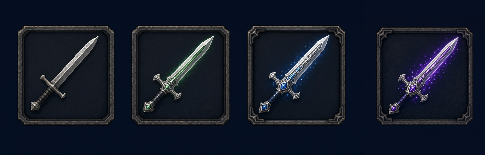
CommonUncommonRareEpic
AxeLeft plain silver, middle green, right blue.
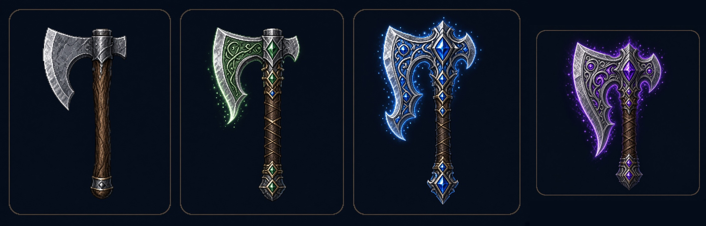
CommonUncommonRareEpic
LanceLeft plain silver, middle green, right blue.
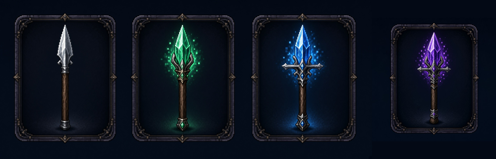
CommonUncommonRareEpic
BowLeft plain silver, middle green, right blue.
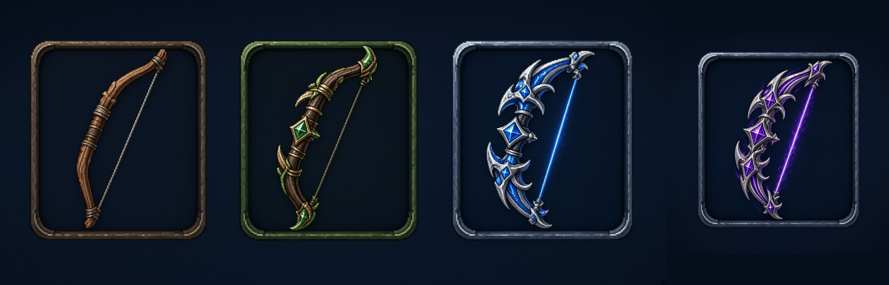
CommonUncommonRareEpic
DaggerLeft plain silver, middle green, right blue.
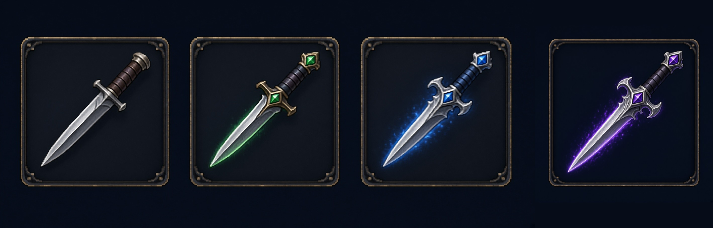
CommonUncommonRareEpic
StaffLeft plain silver, middle green, right blue.
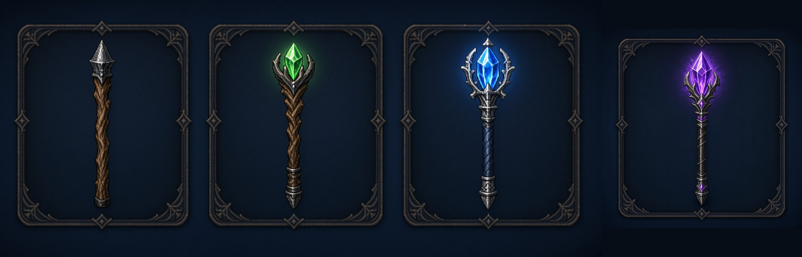
CommonUncommonRareEpic
GunLeft plain silver, middle green, right blue.
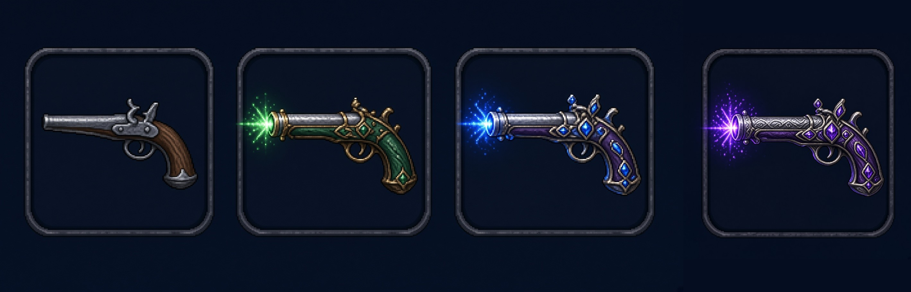
CommonUncommonRareEpic
WandLeft plain silver, middle green, right blue.
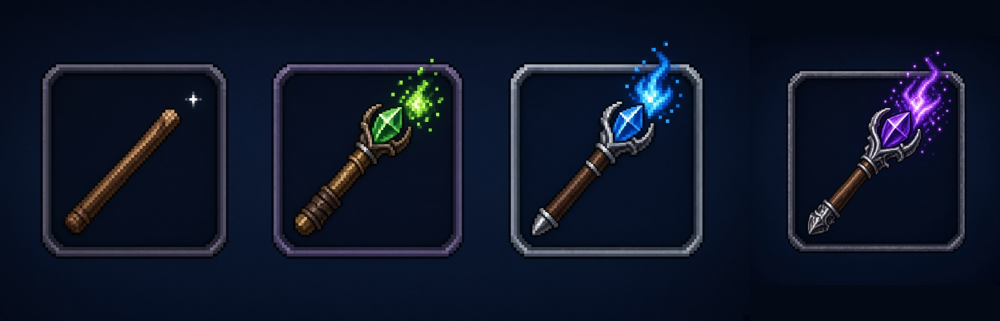
CommonUncommonRareEpic
Armor
Epic is its own purple picture, richer than rare.
Light helmGets more unique as it gets rarer.
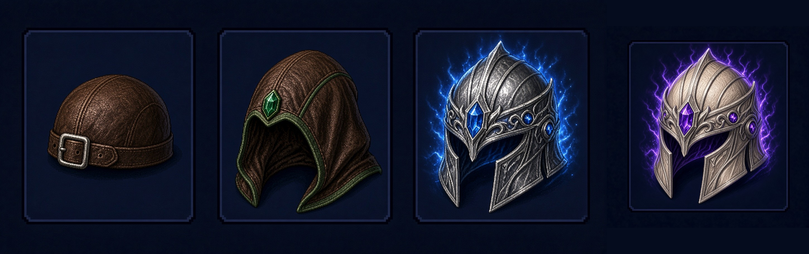
CommonUncommonRareEpic
Light armorGets more unique as it gets rarer.
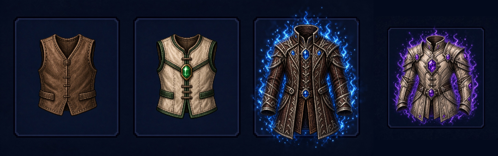
CommonUncommonRareEpic
Light bootsGets more unique as it gets rarer.
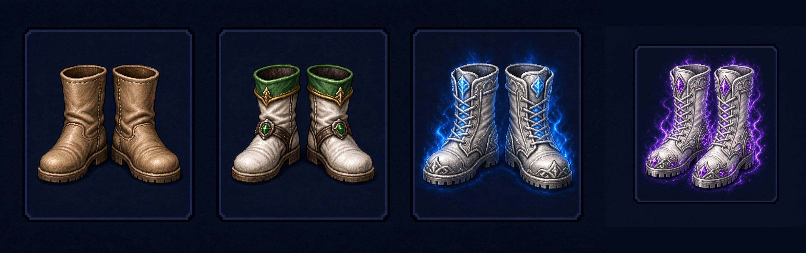
CommonUncommonRareEpic
Medium helmGets more unique as it gets rarer.
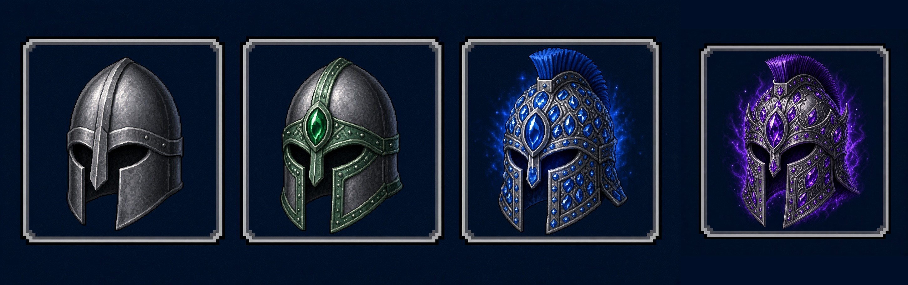
CommonUncommonRareEpic
Medium armorGets more unique as it gets rarer.
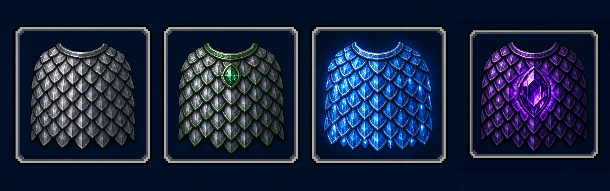
CommonUncommonRareEpic
Medium bootsGets more unique as it gets rarer.
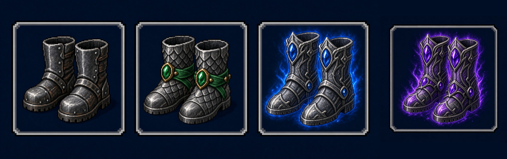
CommonUncommonRareEpic
Heavy helmGets more unique as it gets rarer.
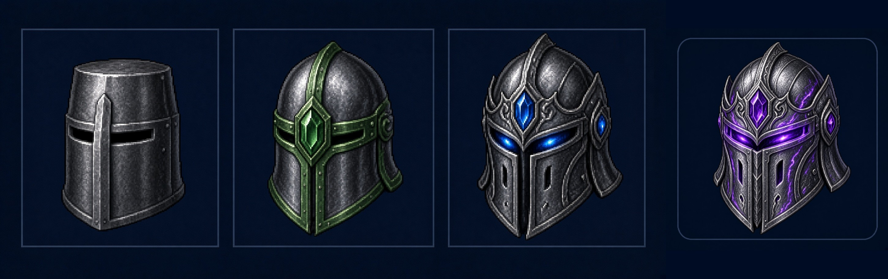
CommonUncommonRareEpic
Heavy armorGets more unique as it gets rarer.
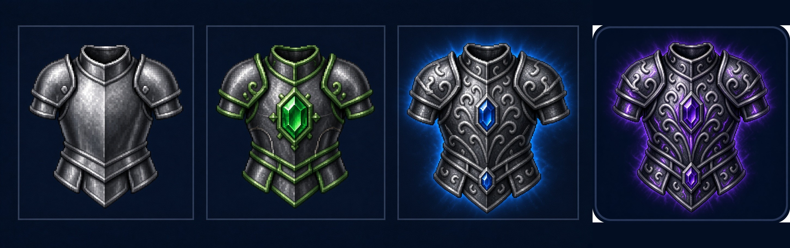
CommonUncommonRareEpic
Heavy bootsGets more unique as it gets rarer.
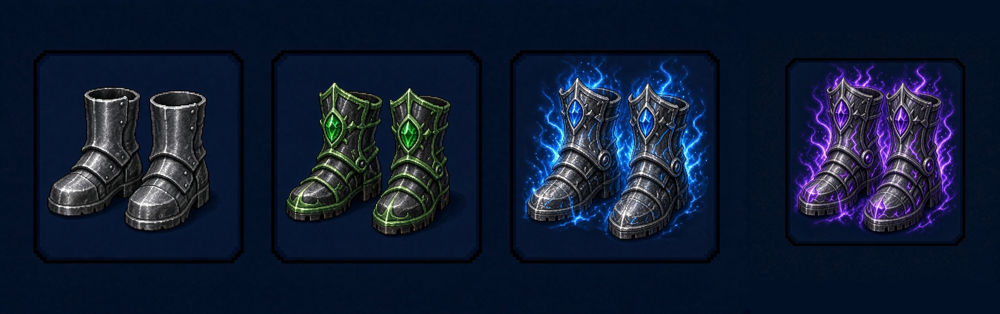
CommonUncommonRareEpic
Charms
Epic uses the rare picture. Heart of the Stair and Phoenix Feather are legendary, so they are one gold picture each.
CharmSilver, then green, then blue.
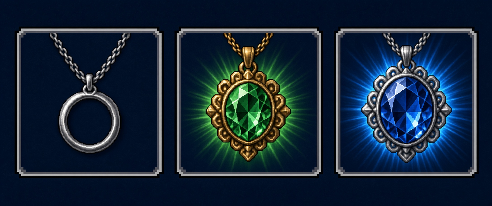
CommonUncommonRare
Heart of the StairLegendary. Gold.
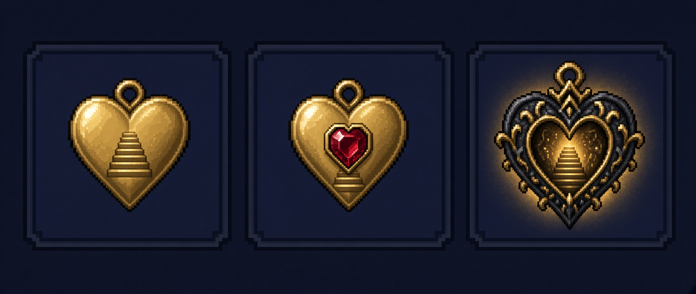
Legendary
Phoenix FeatherLegendary. Gold.
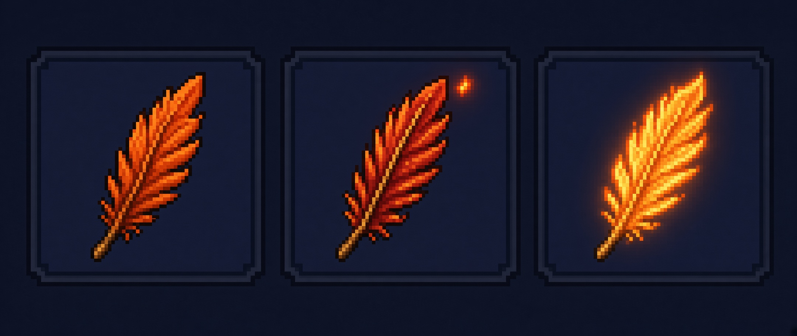
Legendary